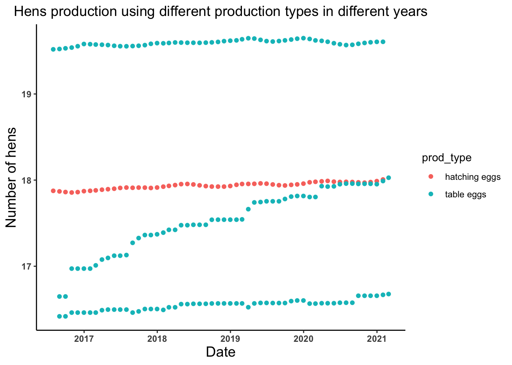

# Loading required packages
library(readr)
library(tidyverse)
library(dplyr)
library(naniar)
library(skimr)
library(ggplot2)
library(tidymodels)
library(ranger)
library(glmnet)
library(rpart.plot)
library(vip)Tidy Tuesday Exercise
LOADING REQUIRED PACKAGES
LOADING AND LOOKING TIDYTUESDAY 2023 WEEK 15 (04/11/2023) DATA
# Loading the TidyTuesday 2023 week 15 (04/11/2023) data
egg_production <- read_csv('https://raw.githubusercontent.com/rfordatascience/tidytuesday/master/data/2023/2023-04-11/egg-production.csv')Rows: 220 Columns: 6
── Column specification ────────────────────────────────────────────────────────
Delimiter: ","
chr (3): prod_type, prod_process, source
dbl (2): n_hens, n_eggs
date (1): observed_month
ℹ Use `spec()` to retrieve the full column specification for this data.
ℹ Specify the column types or set `show_col_types = FALSE` to quiet this message.glimpse(egg_production)Rows: 220
Columns: 6
$ observed_month <date> 2016-07-31, 2016-08-31, 2016-09-30, 2016-10-31, 2016-1…
$ prod_type <chr> "hatching eggs", "hatching eggs", "hatching eggs", "hat…
$ prod_process <chr> "all", "all", "all", "all", "all", "all", "all", "all",…
$ n_hens <dbl> 57975000, 57595000, 57161000, 56857000, 57116000, 57750…
$ n_eggs <dbl> 1147000000, 1142700000, 1093300000, 1126700000, 1096600…
$ source <chr> "ChicEggs-09-23-2016.pdf", "ChicEggs-10-21-2016.pdf", "…skim(egg_production)| Name | egg_production |
| Number of rows | 220 |
| Number of columns | 6 |
| _______________________ | |
| Column type frequency: | |
| character | 3 |
| Date | 1 |
| numeric | 2 |
| ________________________ | |
| Group variables | None |
Variable type: character
| skim_variable | n_missing | complete_rate | min | max | empty | n_unique | whitespace |
|---|---|---|---|---|---|---|---|
| prod_type | 0 | 1 | 10 | 13 | 0 | 2 | 0 |
| prod_process | 0 | 1 | 3 | 23 | 0 | 3 | 0 |
| source | 0 | 1 | 23 | 23 | 0 | 108 | 0 |
Variable type: Date
| skim_variable | n_missing | complete_rate | min | max | median | n_unique |
|---|---|---|---|---|---|---|
| observed_month | 0 | 1 | 2016-07-31 | 2021-02-28 | 2018-11-15 | 56 |
Variable type: numeric
| skim_variable | n_missing | complete_rate | mean | sd | p0 | p25 | p50 | p75 | p100 | hist |
|---|---|---|---|---|---|---|---|---|---|---|
| n_hens | 0 | 1 | 110839873 | 124121204 | 13500000 | 17284500 | 59939500 | 125539250 | 341166000 | ▇▁▁▁▂ |
| n_eggs | 0 | 1 | 2606667580 | 3082457619 | 298074240 | 423962023 | 1154550000 | 2963010996 | 8601000000 | ▇▁▁▁▂ |
cage_free_percentages <- read_csv('https://raw.githubusercontent.com/rfordatascience/tidytuesday/master/data/2023/2023-04-11/cage-free-percentages.csv')Rows: 96 Columns: 4
── Column specification ────────────────────────────────────────────────────────
Delimiter: ","
chr (1): source
dbl (2): percent_hens, percent_eggs
date (1): observed_month
ℹ Use `spec()` to retrieve the full column specification for this data.
ℹ Specify the column types or set `show_col_types = FALSE` to quiet this message.glimpse(cage_free_percentages)Rows: 96
Columns: 4
$ observed_month <date> 2007-12-31, 2008-12-31, 2009-12-31, 2010-12-31, 2011-1…
$ percent_hens <dbl> 3.20000, 3.50000, 3.60000, 4.40000, 5.40000, 6.00000, 5…
$ percent_eggs <dbl> NA, NA, NA, NA, NA, NA, NA, NA, NA, NA, 9.634938, NA, 9…
$ source <chr> "Egg-Markets-Overview-2019-10-19.pdf", "Egg-Markets-Ove…skim(cage_free_percentages)| Name | cage_free_percentages |
| Number of rows | 96 |
| Number of columns | 4 |
| _______________________ | |
| Column type frequency: | |
| character | 1 |
| Date | 1 |
| numeric | 2 |
| ________________________ | |
| Group variables | None |
Variable type: character
| skim_variable | n_missing | complete_rate | min | max | empty | n_unique | whitespace |
|---|---|---|---|---|---|---|---|
| source | 0 | 1 | 8 | 35 | 0 | 31 | 0 |
Variable type: Date
| skim_variable | n_missing | complete_rate | min | max | median | n_unique |
|---|---|---|---|---|---|---|
| observed_month | 0 | 1 | 2007-12-31 | 2021-02-28 | 2018-11-15 | 91 |
Variable type: numeric
| skim_variable | n_missing | complete_rate | mean | sd | p0 | p25 | p50 | p75 | p100 | hist |
|---|---|---|---|---|---|---|---|---|---|---|
| percent_hens | 0 | 1.00 | 17.95 | 6.58 | 3.20 | 13.46 | 17.30 | 23.46 | 29.20 | ▂▅▇▆▆ |
| percent_eggs | 42 | 0.56 | 17.10 | 4.29 | 9.56 | 14.52 | 16.23 | 19.46 | 24.55 | ▆▇▇▆▇ |
DATA EXPLORATION AND VISUALIZATION
# Lets look at the trend of the number of eggs produced by hatching and table eggs production types in different years
egg_date_prodtype_plot <- ggplot(egg_production, aes(x = observed_month, y = log(n_eggs), color = prod_type)) +
geom_point() +
theme_classic() +
labs(x = "Date", y = "Number of eggs", title = "Eggs production using different production types in different years") +
theme(axis.text = element_text(face = "bold"), plot.title = element_text(hjust = 0.5, size = 14),
axis.title = element_text(size = 14))
egg_date_prodtype_plot
# Lets look at the trend of the number of eggs produced by different production process in different years
egg_date_prodprocess_plot <- ggplot(egg_production, aes(x = observed_month, y = log(n_eggs))) +
geom_point(aes(color = prod_process)) +
theme_classic() +
labs(x = "Date", y = "Number of eggs", title = "Eggs production using different production process in different years") +
theme(axis.text = element_text(face = "bold"), plot.title = element_text(hjust = 0.5, size = 14),
axis.title = element_text(size = 14))
egg_date_prodprocess_plot
# Lets look at the trend of the number of hens produced by hatching and table eggs production types in different years
hens_date_prodtype_plot <- ggplot(egg_production, aes(x = observed_month, y = log(n_hens))) +
geom_point(aes(color = prod_type))+
theme_classic()+
labs(x = "Date", y = "Number of hens", title = "Hens production using different production types in different years") +
theme(axis.text = element_text(face = "bold"), plot.title = element_text(hjust = 0.5, size = 14),
axis.title = element_text(size = 14))
hens_date_prodtype_plot
# Lets look at the trend of the number of hens produced by different production process in different years
hens_date_prodprocess_plot <- ggplot(egg_production, aes(x = observed_month, y = log(n_hens))) +
geom_point(aes(color = prod_process))+
theme_classic()+
labs(x = "Date", y = "Number of hens", title = "Hens production using different production process in different years") +
theme(axis.text = element_text(face = "bold"), plot.title = element_text(hjust = 0.5, size = 14),
axis.title = element_text(size = 14))
hens_date_prodprocess_plot
# Lets look at the trend of the percent of cage free eggs produced in different years
cagefreeeggs_date_plot <- ggplot(cage_free_percentages, aes(x = observed_month, y = percent_eggs)) +
geom_point(color = "red") +
geom_line(color = "red") +
theme_classic() +
labs(x = "Date", y = "Percent of cage free eggs", title = "Percent of cage free eggs in different years") +
theme(axis.text = element_text(face = "bold"), plot.title = element_text(hjust = 0.5, size = 14),
axis.title = element_text(size = 14))
cagefreeeggs_date_plotWarning: Removed 42 rows containing missing values (`geom_point()`).Warning: Removed 11 rows containing missing values (`geom_line()`).# Lets look at the trend of the percent of cage free hens produced in different years
cagefreehens_date_plot <- ggplot(cage_free_percentages, aes(x = observed_month, y = percent_hens)) +
geom_point(color = "red") +
geom_line(color = "red") +
theme_classic() +
labs(x = "Date", y = "Percent of cage free hens", title = "Percent of cage free hens in different years") +
theme(axis.text = element_text(face = "bold"), plot.title = element_text(hjust = 0.5, size = 14),
axis.title = element_text(size = 14))
cagefreehens_date_plot
DATA WRANGLING AND VISUALIZATION
# Let's look at the average number of eggs produced per hen so lets create an object named eggs_per_hen
egg_production <- egg_production %>% mutate(eggs_per_hen = n_eggs/n_hens)
summary(egg_production$eggs_per_hen) Min. 1st Qu. Median Mean 3rd Qu. Max.
17.03 20.66 23.25 22.43 24.03 25.56 # Let's plot average number of eggs produced per hens across different production process and types
eggs_per_hen_plot <- ggplot(egg_production, aes(x = prod_type, y = eggs_per_hen)) +
geom_boxplot(aes(color = prod_process)) +
theme_classic() +
labs(x = "Production type", y = "Eggs per hen", title = "Eggs per hen across different production types and processes") +
theme(axis.text = element_text(face = "bold"), plot.title = element_text(hjust = 0.5, size = 14),
axis.title = element_text(size = 14))
eggs_per_hen_plot# Let's plot trend of average number of eggs produced per hens in terms of production type
eggs_per_hen_time_plot <- ggplot(egg_production, aes(x = observed_month, y = eggs_per_hen)) +
geom_line(aes(color = prod_type)) +
theme_classic() +
labs(x = "Date", y = "Eggs per hen", title = "Eggs per hen over time in terms of production type") +
theme(axis.text = element_text(face = "bold"), plot.title = element_text(hjust = 0.5, size = 14),
axis.title = element_text(size = 14))
eggs_per_hen_time_plot